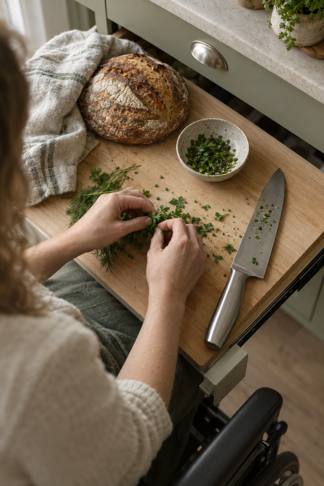

Cook the food you actually want to eat — from your chair.
A research-backed, plain-language guide to working in a standard, non-adapted kitchen as a manual wheelchair user. No remodel required.

Kitchens weren't designed for us. That doesn't mean they don't work.
Most kitchens are built to ADA counter heights of 34 inches maximum for a fixed accessible work surface, with adjustable counters ranging 29–36 inches — but the vast majority of American kitchens don't meet that standard. This guide is for cooks working with what's already there: standard-height counters, a range with rear controls, a wall oven or freestanding stove, a fridge with a freezer on top.
Occupational therapy research and disabled cooks who've been doing this for years.
Every recommendation here is either sourced from a named clinician, an ADA/accessibility code, or the lived experience of a wheelchair-using cook writing publicly about their own kitchen. No "AI-generated tips."
Source: U.S. Access Board — 2010 ADA Standards, Chapter 8: Special Rooms, Spaces, and Elements (§804).
"When you use a wheelchair, as both my wife and I do, cooking can be challenging. One thing that works for me is to make a surface that I can wheel under for cutting, mixing and doing other prepping of ingredients." — New Mobility, "My Three-Step Plan for Happy, Accessible Cooking"